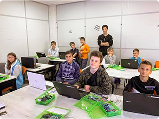
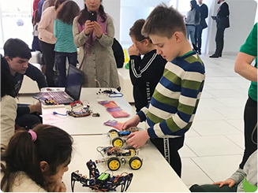
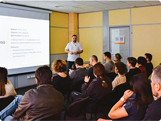
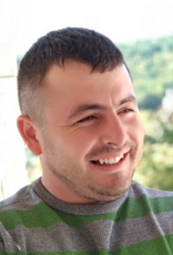
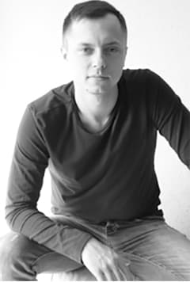
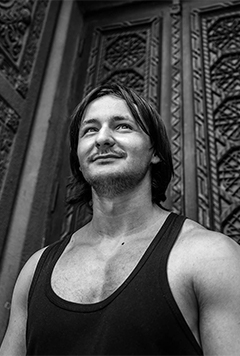
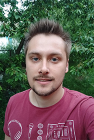
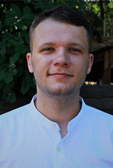
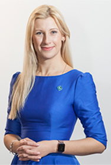

Ми робимо навчання для дитини цікавим та корисним, і надаємо можливість розпочати кар'єру в галузі, що буде актуальною багато років
Так і дитина буде займатись тим, чим бажає, і батьки будуть задоволені, що їх дитина займається дійсно важливими і корисними речами.
Про нас пишуть:
Формуємо інноваційне мислення та допомагаємо опанувати техногії
Відповідно до віку учнів ми пропонуємо програми різної складності та занурення у технології. Усе реалізовується на конкретних навчальних проєктах, що дозволяє найкраще реалізувати вроджені таланти та потенціал
8 соціальних навичок, які засвоюють усі наші учні
Кожен учень з часом знаходить свій хист в певних навичках і таким чином віднаходить свою ідеальну роль в команді.
Емоційний інтелект
Вміння розуміти власні емоції, контролювати свій емоційний стан та легко розуміти, що відчувають інші.
Самостійність
Вміння брати на себе відповідальність, проявляти ініціативу та втілювати в життя власне бачення, без зовнішніх вказівок.
Креативність
Вміння знаходити нестандартні рішення задач, виходити за рамки відомих алгоритмів та правил, створювати нові концепти.
Гнучкість та управління проєктами
Вміння фокусуватися на результаті та швидко знаходити варіанти рішень, які влаштовують усі сторони процесу та ведуть до спільної мети.
Лідерство
Вміння вести за собою команду, надихати своїми ідеями та об'єднувати людей навколо свої цілей та переконань.
Нетворкінг та особистий бренд
Уважно ставимося до безпеки, контролюємо присутність та тримаємо зв'язок з батьками.
Управління фінансами
Розуміння суті фінансових потоків в проєктах та підприємствах. Вміння ефективно управляти та балансувати їх.
Публічні виступи та комунікації
Вміння доносити свої ідеї та захоплювати увагу великої аудиторії своїми промовами та презентаціями.
Комплексний підхід до розвитку дитини
те що допомагає нам випускати учнів, що можуть працювати на фрілансі чи створювати свої технологічні стартапи ще до вступу в університет
Технічні навички (hardskills)
Ваша дитина опанує технічні навички, що потрібні досвідченому IT-фахівцю й впевненому користувачу ПК
Гнучки навички (softskills)
Це навички, що необхідні й в навчанні й на роботі кожній людині. Завдяки їм дитина зможе бути справжнім лідером вже зараз, поки інші тільки навчаються
Розмовна англійська мова
IT-ринок в першу чергу англомовний. Тому ми окремо приділяємо увагу регулярній практиці розмовної англійської, щоб стерти мовний бар'єр в свідомості учнів.

В основі навчання - створення реальних проектів
Дитина набуває IT-навички на курсах GoITeens тільки через створення реальних проектів. Це і
програмування роботів;
створення інфраструктури для розумного будинку;
розробка сайтів для реальних компаній;
комп'ютерних ігор;
запуск стартапів з отриманням перших інвестицій на розвиток.
Саме такий практичний підхід дозволяє надати навчанню конкретного змісту та перетворити опанування професії на захопливу пригоду з реальними викликами, перепонами та задачами, які потребують креативного підходу.

Робота в командах
Наші учні постійно комунікують між собою заради вирішення практичних завдань. Вони вчаться швидко та легко знаходити спільну мову, ефективно обмінюватись думками заради спільного результату.
Розвиток соціальних навичок — один з важливих акцентів процесу навчання в GoITeens.

Менторство та індивідуальний підхід
Кожен учень постійно отримує зворотний зв'язок від викладачів та інших учнів. Завдяки цьому дити постійно вдосконалюють не тільки професійні, але й соціальні навички.
Наші викладачі
Фахівці у своєї галузі, тому на IT-курсах в GoTeens ваші діти будуть отримувати практичні навички, а не тільки теорію
Єлізавета Кевхаян
Поділиться практичним досвідом про те, як створити конкурентне графічне портфоліо.
Digital Designer

Любомир Горбатюк
Навчає розробці веб-сайтів не тільки підлітків, але й дорослих. Працює в команді розробників в компанії SoftServe.
Front-end Developer
Юлія Максимець
Експерт у блочному програмуванню для дітей з 11-річним досвідом викладання.
Minecraft Education
Вадим Пічурін
Front-end розробник в компанії SafeSwiss Company, а в минулому інженер з 10-річним досвідом. Його студенти - фіналісти конкурсу GameOfTeens
Front-end Developer
Юлия Приходько
Допоможе прокачати навички комунікації, розібратись з тайм-менеджментом і скласти особистий план розвитку.
Soft Skills Trainer
Кирилл Свидерский
Розробник ігор у Dragon's Lake Entertainment і володар 30 призів всеукраїнських олімпіад. Його студенти вже отримують пропозиції стажувань у реальних компаніях
Gаme Developer
Єлізавета Кевхаян
Поділиться практичним досвідом про те, як створити конкурентне графічне портфоліо.
Digital Designer
Любомир Горбатюк
Навчає розробці веб-сайтів не тільки підлітків, але й дорослих. Працює в команді розробників в компанії SoftServe.
Front-end Developer
Юлія Максимець
Експерт у блочному програмуванню для дітей з 11-річним досвідом викладання.
Minecraft Education
Вадим Пічурін
Front-end розробник в компанії SafeSwiss Company, а в минулому інженер з 10-річним досвідом. Його студенти - фіналісти конкурсу GameOfTeens
Front-end Developer
Юлия Приходько
Допоможе прокачати навички комунікації, розібратись з тайм-менеджментом і скласти особистий план розвитку.
Soft Skills Trainer
Кирилл Свидерский
Розробник ігор у Dragon's Lake Entertainment і володар 30 призів всеукраїнських олімпіад. Його студенти вже отримують пропозиції стажувань у реальних компаніях
Gаme Developer
Запрошені спікери
Періодично ми запрошуємо визнаних експертів-практиків провести для дітей семінари за своїм фахом
Данило Тонкопій
CEO & Founder DELFAST

Іван Мельничук
Senior Java Developer, розробник курсу GOIT & GOITEENS
Станіслав Кондратюк
JavaScript розробник EPAM SYSTEMS
Родіон Романов
JavaScript розробник JOOBLE

Микола Левків
Node.js розробник SOFTSERVE
Анна Альберт
Product owner FORTUMO (ЕСТОНІЯ)
Олександр Янов
Java розробник EPAM SYSTEMS
Ольга Шаповал
Директорка KHARKIV IT-СLUSTER



Данило Тонкопій
CEO & Founder DELFAST
Іван Мельничук
Senior Java Developer, розробник курсу GOIT & GOITEENS
Станіслав Кондратюк
JavaScript розробник EPAM SYSTEMS
Родіон Романов
JavaScript розробник JOOBLE
Микола Левків
Node.js розробник SOFTSERVE
Анна Альберт
Product owner FORTUMO (ЕСТОНІЯ)
Олександр Янов
Java розробник EPAM SYSTEMS
Ольга Шаповал
Директорка KHARKIV IT-СLUSTER
Останні реалізовані учнями проєкти
Сайт караоке-бару Smile Art Bar
«Власниця закладу Наталія Ковальчук виступила у якості реального замовника для груп Front-end #3 і Front-end #5. Наші студенти впродовж 3-х тижнів працювали над розробкою одночасно привабливого і функціонального сайту, і вже сьогодні готові запускати його в продакшн.»
Сайт кулінарної майстерні Oleg Cook
«Студенти з Вінниці створили односторінковий сайт на замолвення одного з батьків. Тепер бізнес Олега, а саме приготування їжі на замовлення, розвиватиметься ще з більшими темпами.»
Меблі РЕМСЕРВІС
«Сайт компанії з ремонту та реставрації меблів. На сайті представлений увесь спектр послуг компанії, приклади реалізованих робіт, конкурентні переваги та контакти для оформлення замовлення.»
В GoITeens ваша дитина зможе навчатися й розуміти як правильно обирати своє майбутнє - записуйтесь на безкоштовне пробне заняття.
ПОЛІТИКА КОНФІДЕНЦІЙНОСТІ
Ваша конфіденційність дуже важлива для нас. Ми хочемо, щоб Ваша робота в Інтернет по можливості була максимально приємною і корисною, і Ви абсолютно спокійно використовували найширший спектр інформації, інструментів і можливостей, які пропонує Інтернет.
Особиста інформація Членів, зібрана при реєстрації (або в будь-який інший час) переважно використовується для підготовки Продуктів або Послуг відповідно до Ваших потреб. Ваша інформація не буде передана або продана третім сторонам. Однак ми можемо частково розкривати особисту інформацію в особливих випадках, описаних в «Згоду з розсилкою»
Які дані збираються на сайті
При добровільній реєстрації на отримання розсилки ви відправляєте своє Ім'я та E-mail через форму реєстрації.
З якою метою збираються ці дані
Ім'я використовується для звернення особисто до вас, а ваш e-mail для відправки вам листів розсилок, новин, корисних матеріалів, комерційних пропозицій.
Ваші ім'я та e-mail не передаються третім особам, ні за яких умов крім випадків, пов'язаних з виконанням вимог законодавства.
Ви можете відмовитися від отримання листів розсилки і видалити з бази даних свої контактні дані в будь-який момент, клікнувши на посилання для відписки, присутню в кожному листі.
Як ці дані використовуються
За допомогою цих даних збирається інформація про дії відвідувачів на сайті з метою поліпшення його змісту, поліпшення функціональних можливостей сайту і, як наслідок, створення якісного контенту і сервісів для відвідувачів.
Ви можете в будь-який момент змінити налаштування свого браузера так, щоб браузер блокував всі файли або оповіщає про відправку цих файлів. Врахуйте при цьому, що деякі функції і сервіси не зможуть працювати належним чином.
Як ці дані захищаються
Для захисту Вашої особистої інформації ми використовуємо різноманітні адміністративні, управлінські та технічні заходи безпеки. Наша Компанія дотримується різних міжнародних стандартів контролю, спрямованих на операції з особистою інформацією, які включають певні заходи контролю щодо захисту інформації, зібраної в Інтернет.
Наших співробітників навчають розуміти і виконувати ці заходи контролю, вони ознайомлені з нашим Повідомленням про конфіденційність, норм та інструкцій.
Проте, не дивлячись на те, що ми прагнемо убезпечити Вашу особисту інформацію, Ви теж повинні вживати заходів, щоб захистити її.
Ми настійно рекомендуємо Вам вживати всіх можливих заходів обережності під час перебування в Інтернеті. Організовані нами послуги і веб-сайти передбачають заходи щодо захисту від витоку, несанкціонованого використання і зміни інформації, яку ми контролюємо. Незважаючи на те, що ми робимо все можливе, щоб забезпечити цілісність і безпеку своєї мережі і систем, ми не можемо гарантувати, що наші заходи безпеки допоможуть запобігти незаконний доступ до цієї інформації хакерів сторонніх організацій.
У разі зміни цієї політики конфіденційності ви зможете прочитати про ці зміни на цій сторінці або, в особливих випадках, отримати повідомлення на свій e-mail.
ВІДМОВА ВІД ВІДПОВІДАЛЬНОСТІ
Відповідно до чинного законодавства, Адміністрація відмовляється від будь-яких запевнень і гарантій, надання яких може іншим чином матися на увазі, і відмовляється від відповідальності щодо Сайту, Вмісту та їх використання.
Ні за яких обставин Адміністрація Сайту не буде нести відповідальності ні перед якою стороною за будь-якої прямої, непрямої, особливий або інший непрямий збиток в результаті будь-якого використання інформації на цьому Сайті або на будь-якому іншому сайті, на який є посилання з нашого сайту, виникнення залежності, зниження продуктивності, звільнення або переривання трудової активності, а також і відрахування з навчальних закладів, за будь-яку упущену вигоду, припинення господарської діяльності, втрату програм або даних у ашіх інформаційних системах чи іншим чином, що виникли в зв'язку з доступом, використанням або неможливістю використання Сайту, Вмісту або будь-якого пов'язаного інтернет-сайту, або непрацездатністю, помилкою, недоглядом, перебоєм, дефектом, простоєм в роботі або затримкою в передачі, комп'ютерним вірусом або системним збоєм, навіть якщо адміністрація буде явно повідомлено про можливість такого збитку.
Користувач погоджується з тим, що всі можливі суперечки будуть вирішуватися за нормами права.
Користувач погоджується з тим, що норми і закони про захист прав споживачів не можуть бути застосовні до використання їм Сайту, оскільки він не робить відплатних послуг.
Використовуючи даний Сайт, Ви погоджуєтесь з «Відмовою від відповідальності» і встановленими Правилами і приймаєте всю відповідальність, яка може бути на Вас покладена.